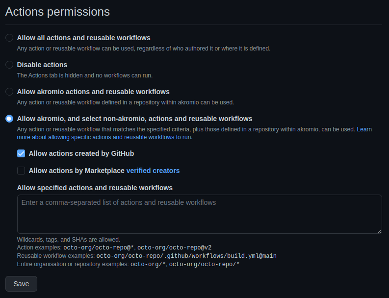

Reutilización de flujos de trabajo
La reutilización es muy importante tanto en programación como en automatización. GitHub Actions no podía ser menos y permite la invocación de un flujo de trabajo desde otro, mejorando enormemente nuestro trabajo. Gracias a la reutilización, podemos evitar el tan concurrido copy-paste.
Al finalizar, sabrá:
-
Cómo crear flujos de trabajo reutilizables.
-
Cómo invocar flujos de trabajo.
Introducción
La reutilización de flujos de trabajo (workflow reuse) consiste en usar un flujo de trabajo desde otro, facilitando la reutilización y evitando la duplicación. Esto favorece el mantenimiento, las pruebas y nuestra productividad. La reutilización se realiza mediante la invocación del flujo de trabajo. Al flujo de trabajo que invoca, se le conoce formalmente como flujo de trabajo llamador (caller workflow). Y al flujo invocado como flujo de trabajo destinatario (callee workflow). Este flujo de trabajo llamado puede ser uno público o privado del mismo repositorio o de la misma cuenta; o bien, público si es de otra cuenta.
Una invocación siempre conlleva la ejecución completa del flujo de trabajo destinatario. No se puede ejecutar un trabajo determinado, se invoca el flujo al completo como cualquier llamada a un flujo de trabajo.
Flujos reutilizables
Para que un flujo pueda ser llamado desde otros, es necesario que sea llamable, es decir, sea un flujo de trabajo reutilizable (reusable workflow). Para que un flujo se considere como tal, debe ubicarse en el directorio .github/workflows del repositorio. Pero ojo, no puede ser en un subdirectorio, debe estar en ese mismo directorio.
Por otro lado, debe indicar el evento workflow_call en su lista de eventos disparadores.
Evento workflow_call
El evento workflow_call representa una invocación de un flujo de trabajo por parte de otro. He aquí un ejemplo:
on:
workflow_call:
inputs:
release:
description: Version type to publish (major, minor, patch...)
required: true
type: string
secrets:
NPM_TOKEN:
description: Token to use for authN on NPM.
required: true
Entradas del evento workflow_call
workflow_call puede definir entradas en su propiedad inputs, de manera similar a la homónima del evento workflow_dispatch. Esto obligará al llamador a indicar los valores de las entradas en la invocación. Las entradas del evento workflow_call no pueden fijar la propiedad type a choice ni la propiedad options, a diferencia de workflow_dispatch que sí puede.
También puede contener la propiedad secrets, la cual indica los secretos que pueden usarse en el flujo. Si el llamador pasa un secreto que no está especificado en los secretos del flujo reutilizable, se generará un error. La propiedad secrets debe ser de tipo objeto, donde cada una de sus propiedades representa un secreto, donde su nombre es el nombre del secreto y su valor define el secreto mediante las siguientes propiedades:
| Propiedad | Descripción |
|---|---|
| description | Breve descripción del secreto y su objeto en el flujo de trabajo. |
| required | Indica si es necesario que lo pase el llamador: true, sí; false, no. |
Recuerde que los secretos se acceden, en el flujo, mediante el contexto secrets.
Invocación de flujos de trabajo reutilizables
Un flujo de trabajo se invoca desde un trabajo. Los pasos del trabajo serán los definidos en el flujo reutilizado. Para ello, añadiremos la propiedad uses al trabajo, en la cual indicaremos el flujo a reutilizar. He aquí un ejemplo ilustrativo de reutilización de un trabajo externo:
name: CI
on:
push:
branches:
- "**"
jobs:
tests:
uses: akromio/.github/.github/workflows/nodejs-ci.yaml@master
Invocación de flujo de trabajo interno
Un flujo de trabajo interno (internal workflow) es un flujo de trabajo reutilizable que se encuentra dentro del mismo repositorio que el llamador. Para invocar este tipo de flujos, el valor de la propiedad uses debe seguir el siguiente formato:
./.github/workflows/archivoDeFlujo
Ejemplo:
uses: ./.github/workflows/ci.yaml
Invocación de flujo de trabajo externo
Un flujo de trabajo externo (external) es aquel flujo de trabajo reutilizable que se encuentra en otro repositorio distinto al del llamador. El repositorio que lo contiene debe ser público. También puede ser privado siempre que se encuentre en la misma cuenta. La invocación de este tipo de flujos es muy similar a la de los internos, pero uses debe ser como sigue:
nombrePropietario/nombreRepositorio/.github/workflows/archivoDeFlujo@referencia
He aquí un ejemplo ilustrativo:
uses: akromio/.github/.github/workflows/go-ci.yaml@master
Se recomienda que cada organización disponga de un repositorio público .github. Este repositorio es especial para GitHub, lo usa ocasionalmente. Pero ojo, puede reutilizar los flujos de trabajo que desee de cualquier repositorio sin necesidad de encontrarse en este repositorio especial.
Paso de entradas y secretos
Cuando el flujo de trabajo declara entradas, el llamador debe pasar sus valores mediante la propiedad with. Para los secretos, se usa la propiedad secrets. Ejemplo:
name: Publish packages on NPM
on:
workflow_dispatch:
inputs:
release:
description: Version type to publish
required: true
type: choice
options: [major, minor, patch]
jobs:
publish:
uses: akromio/.github/.github/workflows/nodejs-release.yaml@master
with:
release: ${{ inputs.release }}
secrets:
NPM_TOKEN: ${{ secrets.NPM_TOKEN }}
Opción de configuración Actions permissions
En la configuración general del repositorio, puede configurar qué flujos de trabajo externos pueden ser referenciados en los flujos del repositorio. Recuerde que la configuración general de GitHub Actions se encuentra en la pestaña Settings del repositorio, más concretamente, en Code and automation > Actions > General:

En la sección, Actions permissions podemos configurar qué flujos de trabajo externos se pueden invocar:
-
Allow all actions and reusable workflows permite utilizar cualquier flujo de trabajo público o ubicado en un repositorio del propietario.
-
Allow <propietario> actions and reusable workflows sólo permite utilizar flujos de trabajo reutilizables ubicados en un repositorio del propietario.
-
Allow <propietario>, and select non-<propietario>, actions and reusable workflows consiente el uso de los flujos que cumplan un determinado criterio.